演示 01 / 同底等高 · 入门
长方形：中间、端点都一样
长方形 ABCD 的 AB = 10 cm，宽 6 cm。P 沿 CD 从 D 移到 C，△PAB 的面积会变吗？
交互图形需要 JavaScript，已知条件见题面。
滑块与拖动功能需要 JavaScript。
为什么？展开讲解
底 AB 始终是 10 cm，P 到 AB 所在直线的垂直距离始终是 6 cm，所以面积是 10 × 6 ÷ 2 = 30 cm²。P 与 D 或 C 重合时仍是三角形，结论不变。
学习 / 小学图形面积
先拖一拖，找出不变量；再独立做题，想清楚以后展开提示与解答。以五、六年级为主，四年级可以先从长方形与三角形的基础演示读起。
三角形面积 = 底 × 高 ÷ 2。固定同一条底边，顶点沿与底平行的直线移动，垂直高不变，面积也不变，这就是“拉窗帘”。
高是顶点到底边所在直线的垂直距离：可以落在底边外，也可以随着图形转斜。别把斜边当高，别把“点动了”直接当成等积的理由。
比较不同三角形时，同高则面积比等于底边比；同底则面积比等于高的比。等积不意味着形状相同或周长相同。
演示中的数据直接显示，方便边动边比较；练习的答案分别折叠，方便先思考。所有小路题都会明确“截段长度”或垂直距离，不含糊地写成斜路的“宽”。
演示覆盖本页练习使用的模型。每张图都能播放、暂停、拖动和复位；也可以使用滑块及键盘方向键。示意图不按统一比例绘制，以标注条件为准。
新增两个正方形的四种拉法与三个正方形的两点移动：同一组边长，阴影位置不同，底、高与面积可能完全不同。
演示 01 / 同底等高 · 入门
长方形 ABCD 的 AB = 10 cm，宽 6 cm。P 沿 CD 从 D 移到 C，△PAB 的面积会变吗？
交互图形需要 JavaScript，已知条件见题面。
滑块与拖动功能需要 JavaScript。
底 AB 始终是 10 cm，P 到 AB 所在直线的垂直距离始终是 6 cm，所以面积是 10 × 6 ÷ 2 = 30 cm²。P 与 D 或 C 重合时仍是三角形，结论不变。
演示 02 / 外部位置 · 不看胖瘦
BC = 12 cm，A 到 BC 的高为 6 cm。P 在过 A 且平行于 BC 的直线上移动，允许越过 B、C 的上方。
交互图形需要 JavaScript，已知条件见题面。
滑块与拖动功能需要 JavaScript。
△ABC 的白色轮廓保留作比较。P 移到 B 左侧或 C 右侧后，垂足落在 BC 的延长线上；高仍是两条平行线之间的垂直距离，不是三角形的斜边。面积始终为 12 × 6 ÷ 2 = 36 cm²。
演示 03 / 方向变化 · 看垂直距离
BC 长 10 cm，P 所在直线与 BC 平行，两条线的垂直距离为 5 cm。把图斜着放，面积会变吗？
交互图形需要 JavaScript，已知条件见题面。
滑块与拖动功能需要 JavaScript。
整个图形转动后，长度和角度不变。图中的直角标记说明虚线段仍垂直于底边，面积为 10 × 5 ÷ 2 = 25 cm²。“高”不一定竖直向下，应看它与所选底边是否垂直。
演示 04 / 反例 · 两侧与零高度
固定底 AB = 8 cm，让 P 上下移动。正数表示 P 在 AB 上方，负数表示下方；比较 +6、0、−6 三个位置。
交互图形需要 JavaScript，已知条件见题面。
滑块与拖动功能需要 JavaScript。
面积用的是距离，所以高没有负数。P 从高 6 cm 移到高 3 cm，面积由 24 变为 12 cm²；P 落到底边上时面积为 0，图形退化。P 在底边另一侧且距底边仍为 6 cm 时，面积又是 24 cm²。
演示 05 / 反例 · 同高看底
P 到 AB 所在直线的高固定为 6 cm，A 不动，B 沿底边直线移动。
交互图形需要 JavaScript，已知条件见题面。
滑块与拖动功能需要 JavaScript。
同高的三角形，面积与底成正比。底从 4 cm 变成 8 cm，面积从 12 cm² 变成 24 cm²。仅仅“点在平行线上”还不够，比较时还要确认底有没有改变。
演示 06 / 分割 · 同高面积比
△PAB 的 AB = 12 cm，高 6 cm。M 在 AB 内移动，比较 △PAM 与 △PMB。
交互图形需要 JavaScript，已知条件见题面。
滑块与拖动功能需要 JavaScript。
两个小三角形共享从 P 到 AB 的高，所以面积比等于 AM∶MB。橙色变大时蓝色变小，但它们合起来始终是 △PAB，面积总和为 36 cm²。
演示 07 / 推广 · 两底与高固定
梯形 ABCD 的 DC ∥ AB，上底 6 cm，下底 12 cm，高 6 cm。保持上底长度，左右移动整条上底。
交互图形需要 JavaScript，已知条件见题面。
滑块与拖动功能需要 JavaScript。
上下底与高都不变，梯形面积就是 (6 + 12) × 6 ÷ 2 = 54 cm²。上底可以伸到底边端点外；只要保持两底平行、高固定，斜腰的变化不影响面积。
演示 08 / 等积替换 · 减去公共部分
梯形 ABCD 中 DC ∥ AB，对角线 AC、BD 交于 O。橙色 △ADO 与蓝色 △BCO 是否始终一样大？
交互图形需要 JavaScript，已知条件见题面。
滑块与拖动功能需要 JavaScript。
△ADC 与 △BDC 共用底 DC，A、B 都在与 DC 平行的 AB 上，所以它们等积。从两个大三角形中分别减去共同的 △DOC，剩下的 △ADO 与 △BCO 就等积。无需用相似三角形。
演示 09 / 推广 · 斜边不是高
平行四边形的底固定为 8 cm，高固定为 5 cm。平移上边，让它从斜变直、再变斜。
交互图形需要 JavaScript，已知条件见题面。
滑块与拖动功能需要 JavaScript。
平行四边形面积为底 × 高，即 8 × 5 = 40 cm²。白色长方形是等积参照。斜边长会变化，不能把斜边当成高直接相乘。
演示 10 / 生活应用 · 宽度定义
16 m × 10 m 的草坪中，小路是平行四边形，贯穿上下边。它在上、下边截得的水平线段都长 1 m；这不是斜路两条长边间的垂直宽度。
交互图形需要 JavaScript，已知条件见题面。
滑块与拖动功能需要 JavaScript。
以草坪上边截得的 1 m 为底，高就是草坪宽 10 m。小路面积恒为 10 m²，草地为 160 − 10 = 150 m²。拉直后左右仍是两块草地，平移拼合后才得到 15 m × 10 m 的长方形。
演示 11 / 组合应用 · 可以直接相加的条件
18 m × 10 m 的草坪中，两条平行四边形小路贯穿上下边，在上下边的截段分别长 1 m、2 m。两路始终不相交，并一起改变倾斜程度。
交互图形需要 JavaScript，已知条件见题面。
滑块与拖动功能需要 JavaScript。
两路没有重叠，面积可以直接相加：(1 + 2) × 10 = 30 m²。草地面积为 18 × 10 − 30 = 150 m²。如果小路相交，就不能直接扣掉两路面积之和。
演示 12 / 组合应用 · 重复扣除
16 m × 10 m 的草坪中，斜路贯穿上下边，上下截段长 1 m；另有贯穿左右边的水平道路，上下边相距 2 m。橙色是两路交叉部分。
交互图形需要 JavaScript，已知条件见题面。
滑块与拖动功能需要 JavaScript。
斜路面积为 1 × 10 = 10 m²，横路面积为 16 × 2 = 32 m²。交叉部分仍是平行四边形，以水平截段 1 m 为底、高 2 m，面积为 2 m²。直接减去 10 和 32 会把交叉处减两次，必须加回一次：160 − 10 − 32 + 2 = 120 m²。
演示 13 / 组合不变量 · 高的和不变
长方形 ABCD 中 AB = 12 cm，宽 8 cm。P 沿内部竖线移动，比较 △PAB 与 △PCD 的面积和；也可移动到上下边。
交互图形需要 JavaScript，已知条件见题面。
滑块与拖动功能需要 JavaScript。
两个三角形底长都为 12 cm。它们的高分别是 P 到 AB、CD 的距离，两高之和恒为 8 cm。因此面积和为 12 × 8 ÷ 2 = 48 cm²，是长方形面积的一半。P 在边上时，其中一个三角形退化为零面积，和仍不变。
演示 14 / 看图迁移 · 四种摆法集中对比
两个正方形左右紧邻，相邻竖边共用一段，底边共线；左边边长 10 cm，右边边长 7 cm。固定阴影三角形 ABC 的 BC，金色 P 表示 A 移动后的位置。先选摆法，再观察 P 的轨迹是否平行于 BC。
根据参考图重绘。手写图没有标单位，本页统一约定为 cm；虚线表示移动轨迹，浅色轮廓用于比较起点和终点。
① B、C 是小正方形的左上、右上角，A 是大正方形左下角。把 A 沿公共底边移到两正方形交界处的 A′。
② B 是小正方形左上角，C 是小正方形右下角，A 是大正方形左上角。把 A 沿大正方形的对角线移到交界处底点 D。
③ B、C 是小正方形的左下、右下角，A 是大正方形左上角。把 A 沿大正方形上边移到右上角 D。
④ B、C 是大正方形的左下、右上角，A 是小正方形右上角。把 A 沿小正方形的对角线移到交界处底点 D。
交互图形需要 JavaScript，四幅静态图见下方正方形对比练习。
滑块与拖动功能需要 JavaScript。
BC 是小正方形上边，长 7 cm。A 所在的公共底边与 BC 平行，两线相距 7 cm，面积是 7 × 7 ÷ 2 = 24.5 cm²。大正方形的 10 cm 帮助看清图形，但不是这里的高。
两个正方形的底边共线，同向对角线 AD、BC 与底边都成 45° 角，所以平行。固定 BC，把 A 移到 D，面积不变。终点三角形 DBC 是小正方形的一半，用底 DC = 7 cm、高 BD = 7 cm 得 24.5 cm²。此处换了计算用的底，不能把 7 cm 误称为斜底 BC 对应的高。
BC 长 7 cm，A 所在的大正方形上边与 BC 平行。两线的距离是大正方形边长 10 cm，所以面积是 7 × 10 ÷ 2 = 35 cm²。不能因为底在小正方形里，就把高也取成 7 cm。
固定大正方形对角线 BC。两条同向对角线与公共底边都成 45° 角，因此小正方形的对角线 AD 与 BC 平行，A 可以移到 D，面积不变。终点三角形 DBC 是大正方形的一半，改选底 BD = 10 cm、高 CD = 10 cm，面积为 50 cm²。这次 7 cm 不必代入面积公式。
演示 15 / 连续两次拉窗帘 · 两次都固定 DE
三个正方形左右紧邻，相邻竖边共用一段，上边共线；从左到右边长 8 m、10 m、14 m。D、E 是中间正方形的右上、右下角，R 是大正方形右下角，P 在小正方形左边上。图中阴影下边经过 E，即 P、E、R 共线，求 △PDR 的面积。
过 E 的水平线与最左竖边的延长线交于 F，与大正方形右边交于 G。先把左点 P 下移到 F，再把右点 R 上移到 G。每步播放停在终点，完成第一拉后点“下一拉”。浅色轮廓保留原图供比较。
第一拉：连接 DE，把原阴影分为左右两块。固定 DE，将左块顶点 P 沿竖直延长线下移到 F。F 比小正方形的左下角低 10 − 8 = 2 m；右块暂时不动。
第二拉：左块保持 △FDE，仍固定 DE。把右块顶点 R 沿大正方形右边上移到 G，移动距离为 14 − 10 = 4 m。最后 F、E、G 在同一水平线上，两块重新合成 △FDG。
交互图形需要 JavaScript，原图和两步解题图见下方三个正方形练习。
滑块与拖动功能需要 JavaScript。
图中 P、E、R 共线，所以连接 DE 后，△PDR 正好分成 △PDE 与 △RDE。左块选竖直的 DE 为固定底，P 所在的最左竖线与 DE 平行。把 P 下移到 F，底和水平方向的高都不变，△PDE 与 △FDE 等积。F 比小正方形左下角低 2 m，这只是 F 的位置关系，不是说 P 只移动了 2 m。
第一拉后 F、E、R 还不共线，外轮廓暂时有一个折角，必须保留两块图形继续第二拉。
保持左块 △FDE 不动，右块仍选 DE 为固定底。R 沿与 DE 平行的右侧竖边上移到 G，△RDE 与 △GDE 等积。G 比 R 高 4 m。现在 F、E、G 共线，左右两块合成一个完整的 △FDG。
底 FG 等于三个正方形的总宽 8 + 10 + 14 = 32 m，高是 DE = 10 m。因此原阴影面积 = 32 × 10 ÷ 2 = 160 m²。两次移动各保持一块的面积不变，最终合并后的总面积就等于原阴影。
演示 16 / 连续等积替换 · 每次重新选固定底
三个正方形左右紧邻，相邻竖边共用一段。中间正方形边长 10 cm，左、右两个小正方形边长都是 7 cm。左小正方形与大正方形上边对齐，右小正方形与大正方形下边对齐。A 是左小正方形左下角，B 是右小正方形右上角；C、D、E 依次是大正方形的右上、左下、右下角。连接 A、B、C 得到涂色三角形。
先完成第一拉，再点“下一拉”：每一拉的金色线都是本步固定底，蓝色虚线表示移动轨迹，P 表示本步顶点移动后的位置。播放会停在本步终点，便于看清两步怎样接起来。
第一拉：固定 BC，把 A 沿 AD 移到 D，得到 △DBC。图中补出的两个小长方形都宽 7 cm、高 10 − 7 = 3 cm，AD、CB 是它们的同向对角线，因此平行。
第二拉：保留上一步得到的 D，改为固定 DC。把 B 沿 BE 移到 E，得到 △DEC。BE、DC 分别是小、大正方形的同向对角线，与公共底边都成 45°，因此平行。
交互图形需要 JavaScript，原图与两步解题图也列在下方综合练习中。
滑块与拖动功能需要 JavaScript。
左侧补出的长方形在左小正方形下方，右侧补出的长方形在右小正方形上方，宽均为 7 cm、高均为 3 cm。两长方形完全一样，AD 与 CB 又都是从左上到右下的对角线，所以 AD ∥ BC。固定 BC，把 A 移到 D，△ABC 与 △DBC 同底等高，面积相等。此时三条边仍斜放，继续找下一条适合固定的底。
现在的三角形是 △DBC，A 已经移到 D，不能又按原来的 △ABC 看图。改选 DC 作固定底，沿与它平行的 BE 把 B 移到 E，△DBC 与 △DEC 等积。△DEC 正好是边长 10 cm 的大正方形的一半，所以原阴影面积 = 10 × 10 ÷ 2 = 50 cm²。两步合起来是：△ABC → △DBC → △DEC。
先在纸上画出所选底边对应的高。提示和完整解答可以分别展开；图形是示意图，以题面标注为准。
基础 / 第 01 题
长方形 ABCD 的 AB = 10 cm，宽 6 cm。P 在 CD 上，分别位于 D、中点、C 时，△PAB 的面积各是多少？如果把整张图转斜、长度保持不变，结论会改变吗？
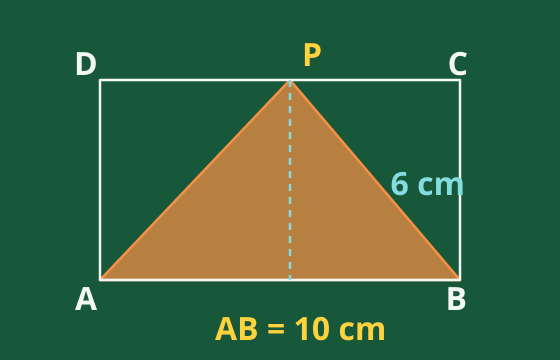
三次选择的底都是 AB，分别找 P 到 AB 的高。
三个位置的底都是 10 cm，高都是 6 cm，因此每次面积均为 10 × 6 ÷ 2 = 30 cm²。P 与端点重合不会使这个三角形退化。把整张图转斜后，底和对应的垂直高都没有改变，面积也不变。
三个位置和整图转斜后，面积都是 30 cm²。
基础 / 第 02 题
AB = 12 cm，P 所在直线与 AB 平行，垂直距离为 6 cm。P 在 A 左侧时，△PAB 的面积是多少？与 P 在中间时相比呢？
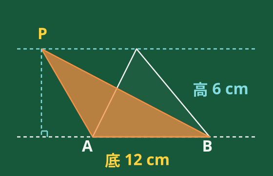
高可以落在底边的延长线上。
延长 AB 作高，仍得到 6 cm；面积为 12 × 6 ÷ 2 = 36 cm²。P 移到中间后底和高都不变。
36 cm²，与在中间时相同。
基础 / 第 03 题
两个三角形共用底 AB = 8 cm，顶点 P、Q 到 AB 的高分别为 3 cm、5 cm。它们等积吗？相差多少？
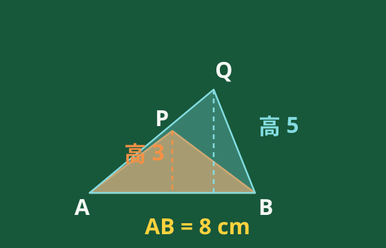
检查高有没有相同，不要只看共用底边。
△PAB 面积为 8 × 3 ÷ 2 = 12 cm²；△QAB 面积为 8 × 5 ÷ 2 = 20 cm²。高不同，面积不同，相差 20 − 12 = 8 cm²。
不等积，△QAB 大 8 cm²。
基础 / 第 04 题
△PAB 的面积为 42 cm²，AB = 14 cm。P 沿一条与 AB 平行的直线滑动，这两条直线相距多少厘米？
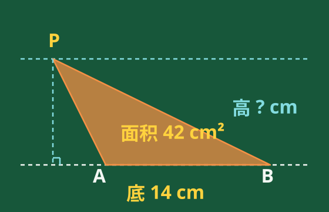
由面积 = 底 × 高 ÷ 2，倒着求高。
高 = 42 × 2 ÷ 14 = 6 cm。高正是两条平行线之间的垂直距离，与 P 的横向位置无关。
相距 6 cm。
基础 / 第 05 题
长方形 ABCD 的 AB = 12 cm，宽 8 cm。P 是 CD 上一点，涂色 △PAB，剩余未涂色部分的总面积是多少？
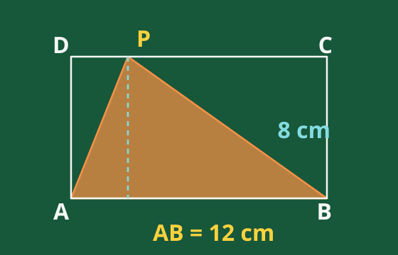
先算整个长方形，再减去三角形。
长方形面积为 12 × 8 = 96 cm²，△PAB 面积为 12 × 8 ÷ 2 = 48 cm²。剩余两块即使形状不同，总面积仍为 96 − 48 = 48 cm²。
48 cm²。
先在纸上画出所选底边对应的高。提示和完整解答可以分别展开；图形是示意图，以题面标注为准。
进阶 / 第 06 题
△PAB 的 AB = 15 cm，高 8 cm。M 在 AB 上，AM = 5 cm。求 △PAM、△PMB 的面积及面积比。若 P 沿过原顶点且平行于 AB 的直线移到 A 的左上方，两块面积会变吗？
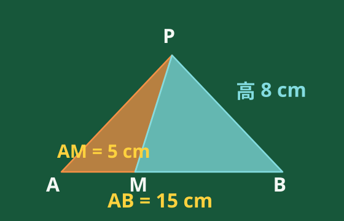
MB = AB − AM，两个小三角形有同一条高。
MB = 15 − 5 = 10 cm。两块面积为 5 × 8 ÷ 2 = 20 cm²、10 × 8 ÷ 2 = 40 cm²；面积比 20∶40 = 1∶2。P 横移后，两条底不变，P 到 AB 所在直线的高仍为 8 cm；即使垂足落在延长线上，两块面积和面积比也不变。
20 cm²、40 cm²，面积比 1∶2；P 横移后不变。
进阶 / 第 07 题
平行四边形的底是 9 cm，与这条底对应的高为 4 cm，另一条斜边长 6 cm。求面积，并解释为什么不能用 9 × 6。
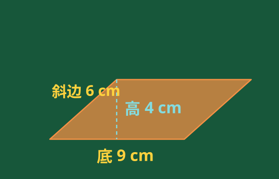
公式需要对应的垂直高，而不是另一条边。
面积 = 9 × 4 = 36 cm²。6 cm 是斜边长，不是到底边的垂直距离，所以 9 × 6 不能表示这个图形的面积。
36 cm²；斜边不能当作高。
进阶 / 第 08 题
梯形 ABCD 中 DC ∥ AB，上底 6 cm，下底 12 cm，高 5 cm。把整条上底向左平移，长度和高保持不变，面积是多少？
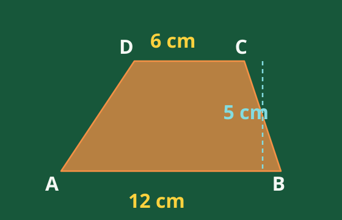
梯形公式只需要上下底和高。
面积 = (6 + 12) × 5 ÷ 2 = 45 cm²。两腰的倾斜程度改变，三个计算条件不变。
始终为 45 cm²。
进阶 / 第 09 题
16 m × 10 m 的长方形草坪中，有一条贯穿上下边的平行四边形斜路。小路在上下边截得的水平线段都长 1.2 m，草地面积是多少？如果再修一条路，什么条件下可以直接把两条路的面积相加？
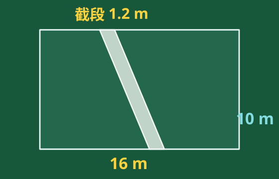
以水平截段为底，小路的高是草坪的10米。
进阶 / 第 10 题
梯形 ABCD 中 AB ∥ DC，对角线 AC、BD 交于 O。已知 △ADO 面积是 18 cm²，求 △BCO 面积。
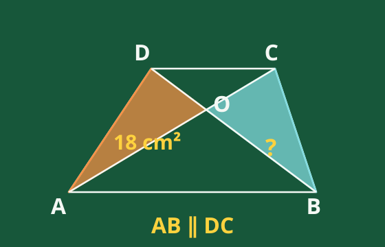
比较 △ADC 与 △BDC，然后同时减去 △DOC。
△ADC 与 △BDC 以 DC 为同一条底，A、B 到 DC 的高相等，因此等积。分别减去共同的 △DOC，剩下的 △ADO 与 △BCO 也等积。
18 cm²。
进阶 / 第 11 题
长方形 ABCD 的 AB = 12 cm，宽 8 cm。P 是内部任意一点，求 △PAB 与 △PCD 的面积和。
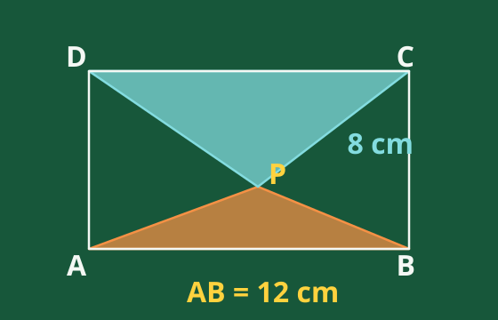
两个底都长12厘米，两条对应高相加是多少？
设两个高为 h₁、h₂。它们加起来等于长方形宽 8 cm，因此面积和 = 12 × (h₁ + h₂) ÷ 2 = 12 × 8 ÷ 2 = 48 cm²，不需要知道 P 的具体位置。
48 cm²。
进阶 / 第 12 题
下列四图中，两正方形左右紧邻，相邻竖边共用一段，底边共线，边长都是 10 cm 和 7 cm。金色 P=A 表示原顶点，虚线指向目标位置。每幅图都固定 BC：请写出 A 的移动轨迹，判断它与 BC 是否平行，再求四个阴影三角形的面积。为什么不能一看到 10 和 7 就直接相乘？
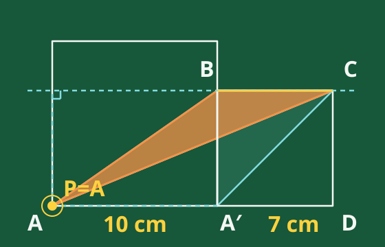
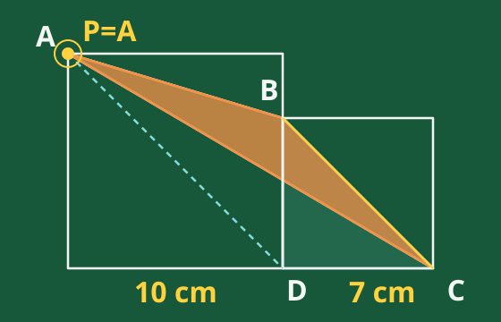
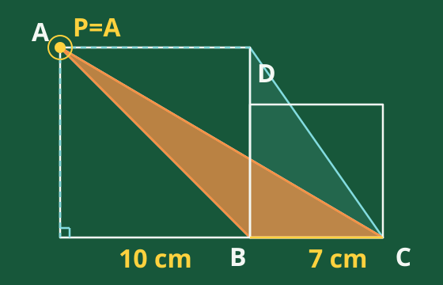
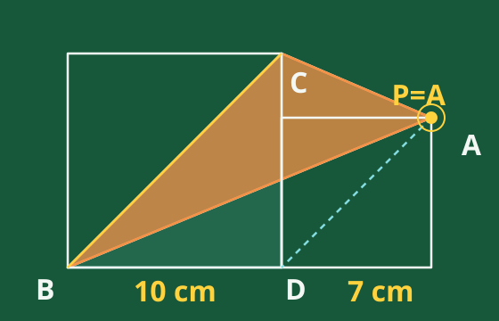
①、②移到终点后都是小正方形的一半；③的底取小边、高取大边；④移到终点后是大正方形的一半。②、④移动过程中固定的是斜底，求数值时可以在终点换用水平底与竖直高。
① 轨迹为公共底边，与小正方形上边 BC 平行，面积 7 × 7 ÷ 2 = 24.5 cm²。② AD 是大正方形对角线，与小正方形对角线 BC 平行，移至 D 后用 DC、BD 计算，面积也是 24.5 cm²。③ AD 为大正方形上边，与 BC 平行，面积 7 × 10 ÷ 2 = 35 cm²。④ AD 是小正方形对角线，与大正方形对角线 BC 平行，移至 D 后用 BD、CD 计算，面积 10 × 10 ÷ 2 = 50 cm²。
给出的两个边长不一定就是所选三角形的底和高。先认清固定底、平行轨迹与对应的垂直高，才能决定哪些长度需要计算。
依次为 24.5、24.5、35、50 cm²。
先在纸上画出所选底边对应的高。提示和完整解答可以分别展开；图形是示意图，以题面标注为准。
挑战 / 第 13 题
平行四边形 ABCD 的 AB = 12 cm。E 在 DC 上，M 在 AB 上，AM = 4 cm。已知 △AEM 面积为 16 cm²，求平行四边形面积、△MEB 面积，以及图中这两个小三角形以外的面积。
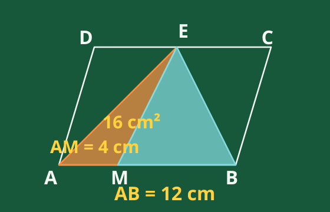
先用小三角形求高；E 在平行的对边上，这也是平行四边形的高。
高 = 16 × 2 ÷ 4 = 8 cm。平行四边形面积 = 12 × 8 = 96 cm²。MB = 12 − 4 = 8 cm，△MEB 面积 = 8 × 8 ÷ 2 = 32 cm²。剩余面积 = 96 − 16 − 32 = 48 cm²。
平行四边形 96 cm²；△MEB 为32 cm²；剩余48 cm²。
挑战 / 第 14 题
16 m × 10 m 的草坪中，一条斜路贯穿上下边，水平截段长 1 m；一条横路贯穿左右边，上下边相距 2 m。两路相交，求草地面积。
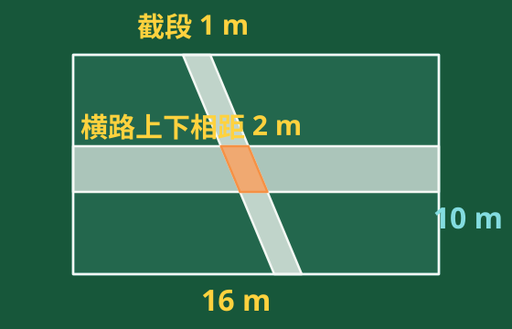
先求两路面积，再检查交叉处有没有被扣两次。
斜路为 1 × 10 = 10 m²，横路为 16 × 2 = 32 m²。交叉处以 1 m 为底、2 m 为高，是面积 2 m² 的平行四边形。道路并集面积为 10 + 32 − 2 = 40 m²，草地为 160 − 40 = 120 m²。
120 m²。
挑战 / 第 15 题
长方形 ABCD 的 AB = 18 cm，宽 10 cm。P 在内部，△PAB 与 △PCD 的面积比为 2∶3。求两块面积，以及 P 到 AB 的距离。
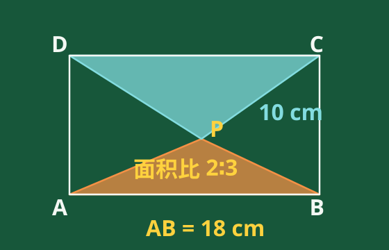
先求面积总和；按2份、3份分完后，再反求高。
两块面积和为 18 × 10 ÷ 2 = 90 cm²。每份为 90 ÷ (2 + 3) = 18 cm²，所以 △PAB 为 18 × 2 = 36 cm²，△PCD 为 18 × 3 = 54 cm²。P 到 AB 的高为 36 × 2 ÷ 18 = 4 cm。
两块面积为36、54 cm²；P 到 AB 为4 cm。
挑战 / 第 16 题
三个正方形左右紧邻，相邻竖边共用一段，上边共线；从左到右边长 8 m、10 m、14 m。D、E 为中间正方形的右上、右下角，R 为大正方形右下角，P 在最左侧边上，阴影下边经过 E，P、E、R 共线。用两次拉窗帘将 △PDR 化成容易计算的大三角形，求面积，并指出每次固定的底与移动的点。
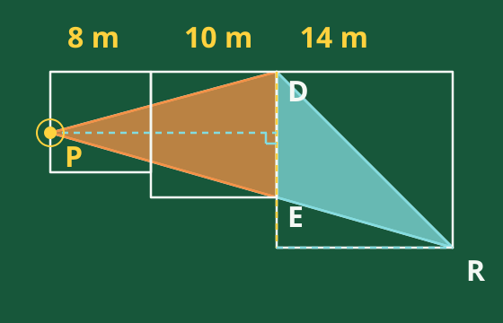
过 E 想一条水平线：把左点 P 竖直下移到这条线上，再把右点 R 竖直上移到这条线上。两块都固定同一条竖直底 DE，顶点的移动轨迹与 DE 平行。
第一拉：连接 DE，原阴影分成 △PDE 与 △RDE。过 E 的水平线与最左竖边的延长线交于 F。固定 DE，把左块顶点 P 下移到 F，左块等积，右块不动。F 比小正方形左下角低 10 − 8 = 2 m。
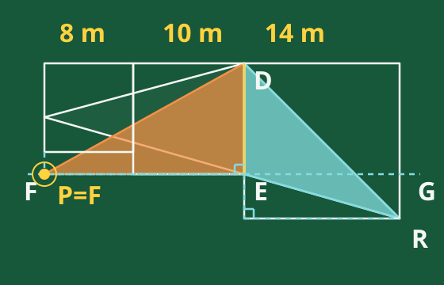
第二拉：仍固定 DE，将右块顶点 R 沿竖直边上移到与 E 等高的 G，右块也等积，左块保持不动。R 上移 14 − 10 = 4 m 后，F、E、G 共线，两块合成 △FDG。
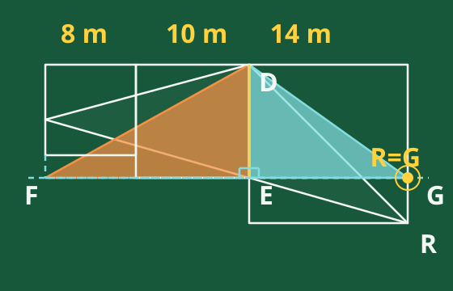
FG = 8 + 10 + 14 = 32 m，DE = 10 m，所以原阴影面积 = 32 × 10 ÷ 2 = 160 m²。也可以验算：左块 10 × 18 ÷ 2 = 90 m²，右块 10 × 14 ÷ 2 = 70 m²，合计仍为 160 m²。两点原来的高度不同，分两次拉到同一水平线后，才重新合成可直接计算的大三角形。
160 m²；两次都固定 DE，先 P→F，再 R→G。
挑战 / 第 17 题
三个正方形左右紧邻，相邻竖边共用一段；从左到右边长为 7 cm、10 cm、7 cm。左小正方形与中间正方形上边对齐，右小正方形与中间正方形下边对齐。A 为左小正方形左下角，B 为右小正方形右上角，C、D、E 分别为中间正方形的右上、左下、右下角。求 △ABC 的面积，并写出两次等积替换各固定哪条底、移动哪个顶点、凭什么平行。
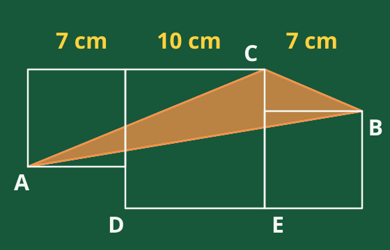
第一拉利用两个 7 × 3 的辅助长方形：固定 BC，把 A 移到 D，得到 △DBC。第二拉再用正方形对角线的平行关系：固定 DC，把 B 移到 E。每次都要明确“谁不动、谁移动”，第二次要从第一次的结果接着做。
第一拉：两侧辅助长方形的高都是 10 − 7 = 3 cm，宽都是 7 cm。同向对角线 AD、CB 平行，所以固定 BC、沿 AD 移动 A 后，△ABC 与 △DBC 等积。
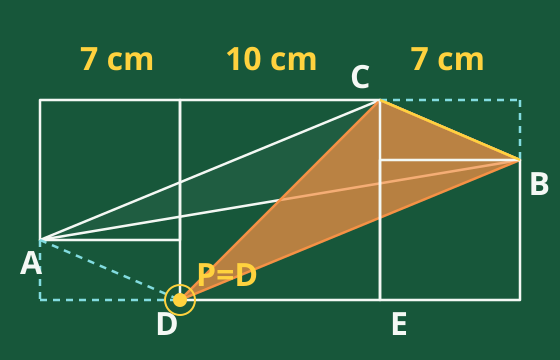
第二拉：DC 是大正方形的一条对角线，BE 是右小正方形的同向对角线，两线平行。固定 DC，把 B 沿 BE 移到 E，得到等积的 △DEC。
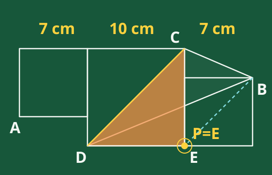
△DEC 是大正方形的一半，底 DE = 10 cm，高 EC = 10 cm，所以面积 = 10 × 10 ÷ 2 = 50 cm²。推理链是 △ABC 与 △DBC 等积，△DBC 又与 △DEC 等积，因此原来的 △ABC 也是 50 cm²。不能说原图直接就以两个 10 cm 为底和高，这组底、高是在两次变形后的终点图中找到的。
50 cm²；第一拉固定 BC、A→D，第二拉固定 DC、B→E。
本页结合模型练习与参考图重绘题目，挑战题也只使用小学面积公式、分数、比例和加减关系。